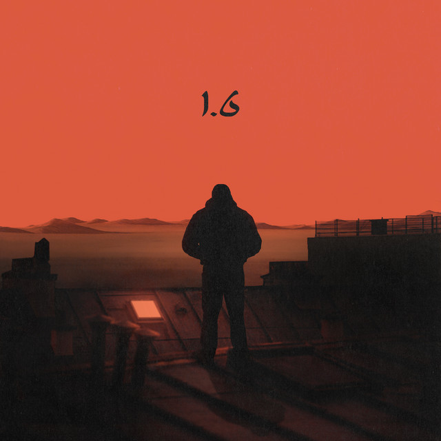
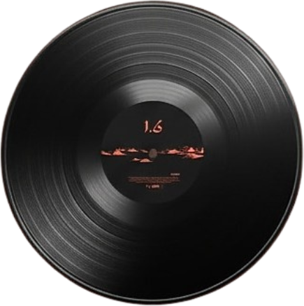

Album

TIF, de son vrai nom Toufik Bouhraoua, est un rappeur franco-algérien né à Alger en 1996. Installé en France, il s’impose comme une des voix les plus singulières du rap francophone. Son univers mêle sonorités chaâbi, influences andalouses et rap moderne, créant un pont entre l’Algérie et la France. À travers des textes à la fois introspectifs et nostalgiques, TIF explore l’exil, l’identité et la mémoire. Avec des morceaux comme 3iniya ou Hinata, il incarne une génération entre deux cultures, fidèle à ses racines et résolument tournée vers l’avenir.

Tack listing
- DEMAIN C'EST B3ID - 2:16
- SHADOW BOXING - 2:47
- AMNESIA - 2:36
- HINATA - 2:55
- S12 (feat. Flenn) - 2:53
- NO PARTY (Interlude) - 1:43
- MATHUSALEM - 3:04
- BYE 3ASSIMA - 2:29
- IL EST 2H ET TU ME MANQUES - 2:50
- 1.6 - 2:52